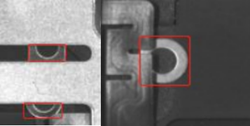

本项目主要检测产品左右固定位置圆形Shim、四角固定位置方形Shim、区域Shim多件和排线的检测。
项目采用左右光源、前后光源和四面光源三次打光采图，图像预处理后运用分类模型检测固定位置圆形Shim、固定位置方形Shim和遮挡，运用检测+分类模型检测Shim多件，运用传统2D检测排线，各检测内容如下：
分类模型分别对固定位置圆形Shim和方形Shim的左右光图首次检测，再用结果区域导入前后光图二次检测；对四光图进行检测，具体介绍如下:
（1）下图中，蓝色方框位置为左右打光图左边和右边固定位置的圆形Shim首次检测区域，通过分类模型判断选中区域为OK/NG，并输出NG结果位置。
（2）下图中，绿色方框位置为第一次检测NG区域，在前后打光图中进行圆形Shim的分类复检，最终输出NG位置。

（3）下图中，蓝色方框位置为左右打光图左边和右边固定位置的方形Shim首次检测区域，通过分类模型判断选中区域为OK/NG，输出NG结果位置。

（4）下图中，绿色方框位置为首次检测NG区域，在前后打光图中进行方形Shim的复检区域，最终输出NG位置。

（5）下图中，绿色框选位置为四面打光图中遮挡的检测区域，若有其他物体遮挡产品区域，判定为NG。

检测模型对四面打光图像和左右打光图像分别进行并行的两次Shim多件检测，具体介绍如下:
（1）下图中，绿色框选位置为四面打光图Shim多件检测区域，若区域中有Shim多件将生成1个外接矩形框。

（2）下图中，绿色框选位置为左右打光图Shim多件检测区域，若区域中有Shim多件生成1个外接矩形框。

（3）下图中，红色框选位置为检测模型生成的Shim显露部分的外接矩形框。

排线检测为传统2D找线和直线之间的距离测量判断其检测结果，本文不具体说明，如下图:

三次打光采集的图像，在定位确认后分类模型检测直接导入采集原图，检测模型Shim多件检测需要对原图像进行ROI获取处理，检测结果统一计算在输出，流程如下：

如下图所示，圆形Shim和方形Shim的分类检测采用分支嵌套的形式，第一层为左右打光图的分类模型检测，内嵌前后打光图的分类模型检测。

作图为第一次固定位置圆形Shim分类检测NG结果输出后，被导入右图进行第二次分类检测排除被误判区域输出最终结果，如图所示。

左图为第一次固定位置方形Shim分类检测NG结果输出后，被导入右图进行第二次分类检测排除被误判区域输出最终结果，如图所示。

如图所示，分类模型的遮挡检测需要先获取ROI区域，去除背景干扰后导入深度学习工具进行分类检测。

分类模型检测产品有无遮挡后直接输出OK/NG结果，如图所示。

如下图所示，采用并行嵌套同时处理四面打光图像和左右打光图像；其中内嵌的并行分支分别使用检测模型对图像同时处理，检测模型1分支采用（图1）模型，检测模型2分支采用（图2）模型；

左图绿色框选位置为四面光图多件检测模型1的深度学习检测模型，右图绿色框选位置为左右光图多件检测模型1的深度学习检测模型，如图所示。

左图红色框选位置为四面光图多件检测模型2的深度学习检测模型，右图红色框选位置为左右光图多件检测模型2的深度学习检测模型，如图所示。

多件Shim深度学习检测模型扫描图像时会在多件Shim位置生成红色外接矩形框，如图所示。

如图所示，绿色框选部分为Shim多件检测结果和遮挡分类结果显示脚本，红色框选部分为固定位置圆形Shim和方形Shim结果显示脚本。

生产界面运行结果如下图所示。